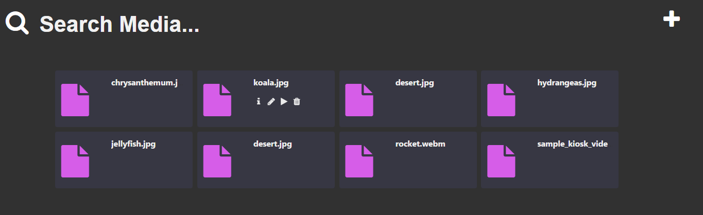

This single page application was a proof of concept regarding how the a user could add and manage media to their accounts in Gain Exposure's nascent Advertisement Management system.
This concept is an easy interface for adding, managing and deleting content from a system. you can try it out here.
Developed in PHP and AngularJS using Javascript (ES5), JQuery and HTML5/CSS3 to power different parts of the UI.